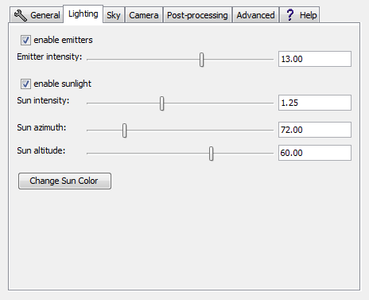

Search Documentation
Search Documentation
- About
 Gallery
Gallery- Getting Started
- User Interface
- Documentation
- Community
- Resources
Render Controls — Lighting
General | Lighting | Sky | Camera | Post-Processing | Advanced | Global

- Enable Emitters
- Toggles light emission from emitters. Turning emitters off will not remove them from the world but instead render them as other objects. This means that objects usually emitting light will now let the path continue bouncing rather than terminating it.
- Emitter Intensity
- Controls the intensity of emitters. Moving the slider to the far left will cause emitters to radiate very little light and values further to the right will have the opposite effect.
- Enable Sunlight
- Toggles light emission from the sun. Disabling this option will not remove the sun itself.
- Sun Intensity
- Controls the intensity of the sun.
- **Sun Azimuth(yaw)
- Controls the sun's postion on the horizontal plane.
- **Sun Altitude(pitch)
- Controls how high in the sky the sun is.
- Change Sun Color
- Brings up a dialogue with which the color of the sun can be set. Changing the color of the sun can be useful for creating atmospheric effects (such as lighting night-time scenes).